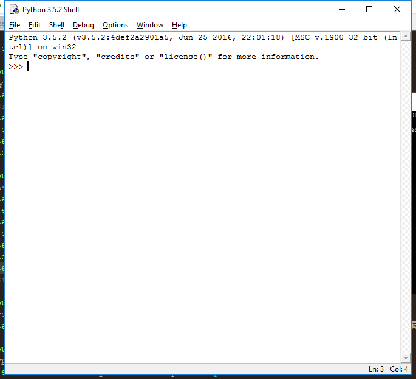
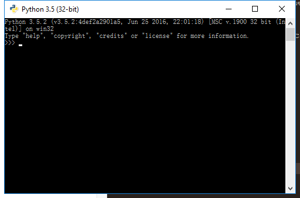

python เวอร์ชั่นปัจจุบัน คือ 3.6 (19 มิถุนายน 2560) เป็น high-level language มีการแปลภาษาแบบ interpreter คือทำทีละบรรทัด เป็นภาษาที่เรียนรู้ได้ง่าย
ในชีวิตประจำวัน python ถูกนำมาใช้งานหลายอย่าง เช่นการทำ back-end ของ dynamic website, ใช้ในงาน data science, การเขียนโปรแกรมลงบน hardware สำหรับงาน embedded system เป็นต้น
สามารถดาวน์โหลด python มาใช้งานได้ที่ https://www.python.org/downloads/ และมี document วิธีการเขียนโปรแกรมด้วยภาษา python ที่ https://docs.python.org/3/library/
เราสามารถใช้ editor ในการเขียนโปรแกรมภาษา python ได้หลากหลายโปรแกรม เช่น notepad++, sublinetext, pyCharm เมื่อเราติดตั้งตัว python แล้ว ก็สามารถ run source code ภาษา python ได้
ความแตกต่างของ python 2.7 vs python 3.3 ถึงเวอร์ชั่นปัจจุบันจะเป็น python 3.x แต่มีบางโปรแกรมและบางหน่วยงานใช้ python 2.7 อยู่ ดังนั้นเราจะมาดูความแตกต่างกันระหว่าง 2 เวอร์ชั่นนี้
python 2.7
|
python 3.x
| |
print
|
print “hello world”
|
print (“hello world”)
|
Integer Division
|
3/2 = 1
|
3/2 = 1.5
|
input value
|
raw_input()
|
input()
|
strip line in file
|
string.spilt(f.read(), “\n”)
|
f.read().strip().splitlines()
|
file mode
|
rb, wb, ab
|
r+, w+, a+
|
การเลือกใช้ python ขึ้นอยู่กับโปรแกรมที่รองรับ และปัจจัยอื่นๆ ที่นอกเหนือจากความใหม่ของเวอร์ชั่น
download จากหน้าเว็บ เลือก version ได้ตามชอบใจ จากนั้นลงโปรแกรมปกติเลย และส่วนสำคัญ คือ การ set path ที่ system environment
กดคลิกขวาที่ไอคอนคอมพิวเตอร์ของท่าน เลือก properties และเลือก Advances system setting
จากนั้นกดปุ่ม Environment Variables ไปที่ system variable เลือกตัวแปรชื่อ path และใส่ path ของ python ลงไปเพิ่ม แค่นี้ก็เรียบร้อย หรือจะทำที่ command line ก็ได้นะ แต่วิธีนี้ชัวร์และอุ่นใจกว่า
ตัวโปรแกรม python มีสองแบบ คือแบบ command line กับแบบ GUI


ข้อดีข้อเสียอย่างย่อๆ คือ แบบ command line เวลาเราพิมพ์ผิด เราจะต้องพิมพ์ใหม่ ส่วนแบบ GUI เราพิมพ์ผิดแล้วก็อปแก้พิมพ์ใหม่ได้ มีแค่นี้แหละ
การพิมพ์ Hello world ออกมาสู่หน้าจอ เวลาเราเรียนภาษาใหม่ๆ มักจะเป็นคำนี้เสมอเลยเนอะ คำสั่งใช้ง่ายมากๆเลย
print "Hello world" #ง่ายๆเลย แต่อันนี้ของ python 2.7
print ("Hello world") #อันนี้ของ python 3.0 ขึ้นไป
นี่คือสิ่งที่เราบอกว่า syntax ต่างกันไงหล่ะ
ใช้ # เพื่อ comment code นะจ๊ะ
ข้อควรระวัง ในภาษา python ไม่ได้ใช้ ; ในการสิ้นสุดคำสั่งนะ
และใช้ 2space แทน tab
Data type ใน python ไม่ได้มียุ่บยับหรือภาษาอื่น หลักๆมีสามตัวคือ
บวก ลบ คูณ หาร : +, -, *, / => 7/2
การหารเอาเศษ : mod % => 7/2
เลขยกกำลัง : power ** => 7**2
การหารแบบปัดลง : floor division // => 7//2
การหารแบบปัดขึ้น : round() => round(7/2)
บวก ลบ คูณ หาร : +, -, *, / => 7/2
This is your fourth panel
This is your fourth panel
This is your fourth panel
This is your fourth panel
This is your fourth panel
This is your fourth panel
This is your fourth panel
This is your fourth panel